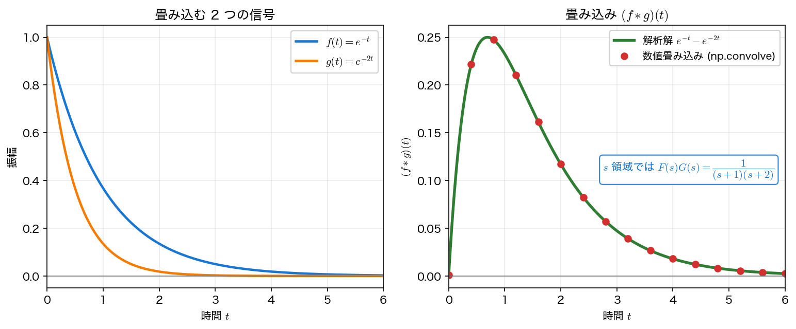
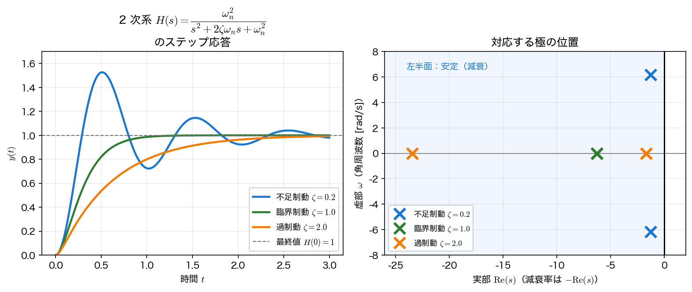

畳み込み積分と伝達関数
第6回では入力のないシステム（自由応答）を扱った。本ページでは 入力のあるシステム に進み、入力と出力を結ぶ 畳み込み積分 と、その背後にある 畳み込み定理 \(\mathcal{L}[f*g]=F(s)G(s)\)、そしてシステムを s 領域で表す 伝達関数 \(H(s)\) を導入する。
LTI システムと畳み込み
線形時不変（Linear Time-Invariant, LTI）システムでは、入力 \(x(t)\) と出力 \(y(t)\) が 畳み込みで結ばれる。
ここで \(h(t)\) は インパルス応答、すなわち入力 \(x(t)=\delta(t)\) に対する出力である。畳み込みの意味は「過去の入力 \(x(\tau)\) が、それぞれ時間差 \(t-\tau\) だけ経ったインパルス応答 \(h(t-\tau)\) で重み付けされ、足し合わされる」というものだ。第3回で見た畳み込みと同じ演算だが、時間領域で直接計算すると毎回積分が必要で重い。
この式が「出力そのもの」になる条件
一般の LTI 系の入出力関係は 両側の 畳み込み \(y(t)=\int_{-\infty}^{\infty}x(\tau)h(t-\tau)d\tau\) である。積分区間が \([0,t]\) に縮むのは、 (i) 系が 因果的（\(t<0\) で \(h(t)=0\)。出力が未来の入力に依存しない）、かつ (ii) 入力が \(t<0\) で \(0\) という 2 条件による。 さらに、この \(y(t)\) が出力の すべて になるのは (iii) 初期状態が静止している（零状態）ときだけである。初期エネルギーが蓄えられていれば、これに 零入力応答（第6回で扱った自由応答）が重なる。線形性より、一般の応答は「零入力応答 ＋ 零状態応答」の和として書ける。本ページでは断りのない限り (i)〜(iii) を仮定する。
畳み込み定理
ラプラス変換の威力がここでも効く。畳み込み定理は、時間領域の畳み込みが s 領域では ただの積 になることを主張する。
証明は 2 重積分の順序交換なので、それが正当化される条件が要る。\(f,g\) が 区分的連続 で 指数位数（ある \(M,c\) に対し \(\lvert f(t)\rvert\le Me^{ct}\)）であれば、\(F\) と \(G\) の収束領域が重なる半平面でこの交換が許され、上式が成り立つ。本講義で扱う指数関数・三角関数・多項式の組み合わせはすべてこの条件を満たす。
これを LTI システムに当てはめると、\(y=x*h\) の両辺をラプラス変換して
を得る。この \(H(s)=Y(s)/X(s)\) が 伝達関数（transfer function） であり、システムそのものを s 領域で表す。第4回でフーリエ領域のフィルタ \(H(\omega)\) を「周波数ごとの掛け算」として見たが、伝達関数 \(H(s)\) はその一般化で、\(s=\sigma+j\omega\) と複素平面に広がることで過渡応答・安定性まで扱える（\(H(s)=Y/X\) は 零初期条件 での入出力関係であり、初期条件そのものはラプラス変換全体の枠組みで扱う）。
例：2 つの指数信号の畳み込み
\(f(t)=e^{-t}\)、\(g(t)=e^{-2t}\) の畳み込みを、定義どおりの積分と畳み込み定理の両方で求めて一致を確かめる。
import sympy as sp
t, tau = sp.symbols("t tau", positive=True) # s は複素変数なので仮定を付けない
s = sp.symbols("s")
f = sp.exp(-t) # F(s) = 1/(s+1)
g = sp.exp(-2*t) # G(s) = 1/(s+2)
# 定義どおりの畳み込み積分
conv = sp.integrate(f.subs(t, tau) * g.subs(t, t - tau), (tau, 0, t))
print("(f*g)(t) =", sp.expand(conv))
# 畳み込み定理：L[f*g] = F(s)G(s)
F = sp.laplace_transform(f, t, s, noconds=True)
G = sp.laplace_transform(g, t, s, noconds=True)
print("F(s)G(s) =", sp.simplify(F * G))
print("L[f*g] =", sp.simplify(sp.laplace_transform(sp.expand(conv), t, s, noconds=True)))
畳み込み積分の結果 \((f*g)(t)=e^{-t}-e^{-2t}\) をラプラス変換すると、\(F(s)G(s)=\dfrac{1}{(s+1)(s+2)}\) と 厳密に一致 する。時間領域では積分が必要だった演算が、s 領域では分数の掛け算で済んでいる。

np.convolve に刻み幅 $dt$ を掛けたもの）で、両者は一致する。時間領域の畳み込みは、s 領域では積 $F(s)G(s)=1/((s+1)(s+2))$ になる。数値畳み込みの注意
連続の畳み込み \(\int_0^t f(\tau)g(t-\tau)d\tau\) を np.convolve で近似するときは、離散和に 刻み幅 \(dt\) を掛ける 必要がある（リーマン和の \(\sum f g\,\Delta\tau\)）。これを忘れると振幅が \(1/dt\) 倍ずれる。上図では np.convolve(f, g) * dt としている。
伝達関数と 2 次系
伝達関数 \(H(s)\) が決まれば、任意の入力 \(X(s)\) に対する出力は \(Y(s)=H(s)X(s)\) を逆変換するだけで得られる。システム解析で最も重要なのが 2 次系である。
ここで \(\omega_n\) は 固有角周波数、\(\zeta\) は 減衰比（damping ratio） である。極は分母 \(=0\) の根
で与えられ、\(\zeta\) の値によって応答が 3 つに分類される。
- \(0<\zeta<1\) … 不足制動：極は複素共役対 \(-\zeta\omega_n\pm j\omega_n\sqrt{1-\zeta^2}\)。減衰しながら振動し、ステップ応答は最終値を 行き過ぎる（オーバーシュート）。
- \(\zeta=1\) … 臨界制動：極は実重根 \(-\omega_n\)。振動せず最も速く収束する境目。
- \(\zeta>1\) … 過制動：極は 2 つの実極。振動なくゆっくり収束する。
scipy.signal で 2 次系のステップ応答を計算し、極とあわせて確かめる。
import numpy as np
import scipy.signal as ss
wn = 2 * np.pi
for zeta in (0.2, 1.0, 2.0):
den = [1, 2 * zeta * wn, wn**2]
sys = ss.TransferFunction([wn**2], den)
t = np.linspace(0, 6, 5000)
_, y = ss.step(sys, T=t)
poles = np.roots(den)
print(f"ζ={zeta}: 極={np.round(poles, 2)} "
f"最大値={y.max():.3f} 終値={y[-1]:.3f}")
ζ=0.2: 極=[-1.26+6.16j -1.26-6.16j] 最大値=1.527 終値=1.000
ζ=1.0: 極=[-6.28+0.j -6.28-0.j] 最大値=1.000 終値=1.000
ζ=2.0: 極=[-23.45 -1.68] 最大値=1.000 終値=1.000
不足制動（\(\zeta=0.2\)）では最大値が \(1.527\)、すなわち 約 52.7% のオーバーシュート が出ている。一方、臨界制動・過制動では行き過ぎがない。いずれも終値は \(1.000\) で、これは伝達関数の DC 利得 \(H(0)=\omega_n^2/\omega_n^2=1\) に一致する（最終値定理は次ページ）。

減衰比 \(\zeta\) と極の位置
複素極 \(-\zeta\omega_n\pm j\omega_n\sqrt{1-\zeta^2}\) は、原点から見た角度が \(\zeta\) で決まる（\(\cos\theta=\zeta\)、\(\theta\) は負の実軸からの角）。\(\zeta\) が小さいほど極は虚軸に近づき、振動が目立つ。\(\zeta\to1\) で極は実軸（負の実軸上の重根）に集まり、振動が消える。減衰比は「極が虚軸からどれだけ離れて寝ているか」を表す量である。
まとめ
- LTI システムの入出力は畳み込み \(y(t)=(x*h)(t)\) で結ばれ、\(h(t)\) は インパルス応答。
- 畳み込み定理 \(\mathcal{L}[f*g]=F(s)G(s)\) により、時間領域の畳み込みは s 領域で 積 になる。よって \(Y(s)=H(s)X(s)\)、\(H(s)=\mathcal{L}[h(t)]\) が 伝達関数。
- 2 次系 \(H(s)=\omega_n^2/(s^2+2\zeta\omega_n s+\omega_n^2)\) は、減衰比 \(\zeta\) で不足制動（オーバーシュート）・臨界制動・過制動に分かれる。応答は極の位置で決まる。
次は、これらを支える ラプラス変換の公式（定理の総まとめと初期値・最終値定理）に進む。